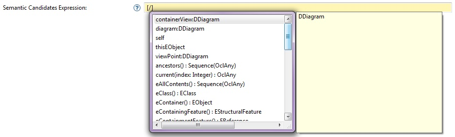
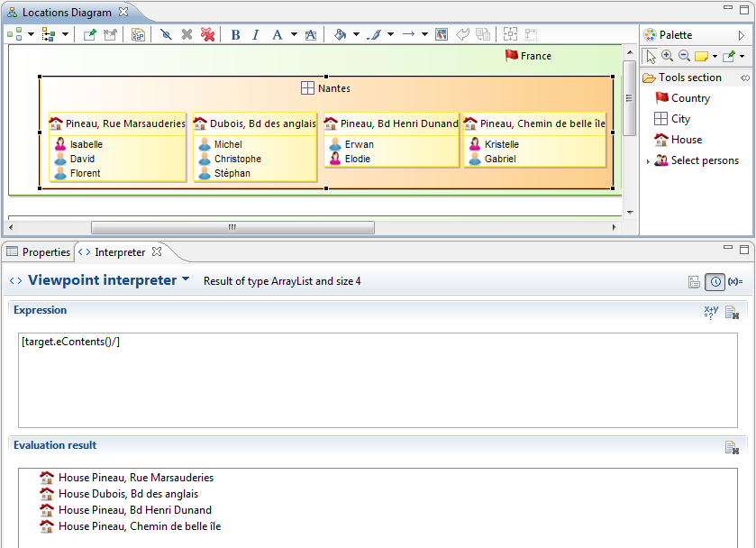
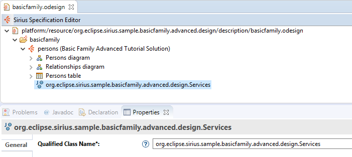
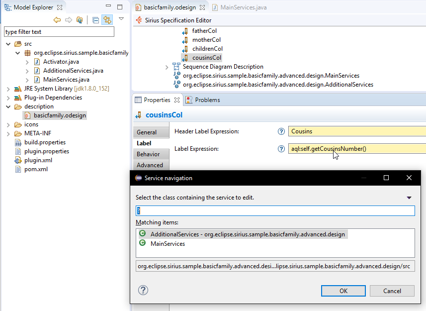

Many parts of a VSM require you to provide interpreted expressions, which will be evaluated at runtime to provide a behavior specific to your domain and representations. Some of these expressions return model elements (in which case we call them queries), while others simply produce text (for example the expressions used for labels), but the principles stay the same.
Sirius does not force the use of a specific language to write these queries. Currently, three different languages are provided by default, and if you have specific needs, you can extend the system and provide your own. You can use several different languages inside the same VSM (but only one in each expression).
Whatever the language(s) you use, because they are all optional from Sirius’s point of view, make sure the Viewpoint Specification Project which contains your VSMs explicitly depends on the Sirius plug-in which provides supports for these languages. Otherwise when you modelers are deployed to end-users you can not be sure the proper support will be available. The Viewpoint Specification Projects which are created using the standard wizard are pre-configured to use AQL ( Acceleo Query Language), which is the recommended language as of Sirius 3.1. See the sections below for each of the standard languages for the name of the Sirius support plug-ins to depend on if you use the language.
Some general rules are independent of the language details.
Auto-completion. First, in the VSM editor, any field in the property view which has a yellow background is an interpreted expression. In these fields, auto-completion can be triggered by hitting Ctrl+Space.
The completion will correspond to the empty expression for the installed query language (e.g. aql: for AQL). It will also place the cursor at the expected place where it is ready to start typing the expression.
When hitting auto-completion on an empty expression, the first completion proposal will correspond to the variables which are available in the expression’s context, and the rest correspond to all the features, services, etc. which are available on the current element.

Sometimes Sirius is not able to statically determine the precise type of the model elements on which an expression will be evaluated. In that case, it assumes a plain
EObject. This means you will not get completion proposals specific to your custom types, and that if you use features or services which are not available on
EObject, the VSM’s validation will fail. To prevent this, if you know the precise type of the elements and the language supports it, add a cast operation to tell Sirius the actual type (e.g. aql:filter(packageName::ExpectedType).theRestOfTheExpression if using AQL for example.
The Interpreter view. The Interpreter view can be used to develop complex expressions interactively. The view can work in either the native Acceleo mode (corresponding to Acceleo 3/MTL) or in the Sirius mode. In the Sirius mode, you can use any of the languages supported by Sirius, but you lose the benefits of syntax coloring.
To use the Interpreter view, simply open a Sirius representation, select and element in it (for example a shape on a diagram), and type some expression in the view’s upper text field. The result of the expression (a set of model elements or a string) will appear in the lower part of the view. If you select a different element, the result will automatically be re-evaluated in the context of the new element.

Warning: When using the
Interpreter view from an element selected in a Sirius representation, the context of the expression is
not the
semantic element, but the
view model element used internally by Sirius. To access the semantic element you must use the view’s
target reference. More concretely, imagine you have a Sirius diagram representing UML classes with nodes. If you select a class and enter aql:self in the interpreter view, the result will not be a UML
Class element, but a
DNode (the type used internally by Sirius to represent graphical nodes). To get the UML class, you must enter aql:self.target (or the equivalent in other languages). Keep this in mind when using the
Interpreter view to develop expressions you want to use inside a VSM: most expressions defined in the VSM will be evaluated in the context of a semantic element, so you will need to add/remove
target references when switching between the two.
Determinism. In general, you should try to ensure that your queries are deterministic, i.e. from the same input model they should always return the same result, and in the same order (if returning collections of elements). Otherwise, each time a representation is refreshed it might become dirty (as Sirius will see the order difference as a change) or even visually unstable (i.e. elements shown in a different order). There are several things to be aware of in order to ensure determinism in your queries:
LinkedHashSet instead of
HashSet for example.
Sirius provides several specialized interpreters to handle more efficiently some forms of simple expressions which can occur very often in a typical VSM. Each interpreter focuses on a very limited case, and none supports complex expressions. This allows them to be very fast, but it requires that you use them explicitly when possible. All these interpreters are available by default in Sirius, you do not need to declare additional dependencies in your VSM project to be able to use them.
var:
This interpreter can only do direct access to the value of a named variable. For example, instead of aql:containerView (using AQL), the equivalent using the specialized interpreter would be
var:containerView. As a special case, the pseudo-variable
self is available to access the current element (the evaluation context):
var:self is equivalent to aql:self in AQL.
feature:
This interpreter can only do direct access to a named feature of the current element. For example, instead of aql:self.name, the equivalent using this interpreter would be
feature:name. Note that if your metamodel generated code was generated with feature delegation set to Reflective, the feature interpreter will return the raw value of the attribute (as seen by
eGet), bypassing any custom getter implementation you provided. This interpreter also supports the following pseudo-features:
feature:eContainer returns the container of the current element (or
null if there is none). This is equivalent to aql:self.eContainer().
feature:eContents returns the direct contents of the current element (or an empty collection if there is none). This is equivalent to aql:self.eContents().
feature:eAllContents returns all the elements directly and indirectly contained inside the current element (or an empty collection if there is none). This is equivalent to aql:self.eAllContents().
feature:eCrossReferences returns all the model elements which are directly referenced by the current element (or an empty collection if there is none). This is equivalent to [self.eCrossReferences()/] using Acceleo 3/MTL.
service:
This interpreter can be used to directly invoke a service method (i.e. a Java method that follows conventions for
service methods ) on the current element. For example, assuming the service class
EcoreServices
has been correctly registered in the VSM, the expression
service:getEClasses (note the absence of parenthesis) will invoke the
getEClasses on the current element if it is an instance of
EPackage.
service:serviceName(view, diagram).
service:myVariableName.serviceName.
Starting from Sirius 3.1,
AQL (Acceleo Query Language, first introduced in Sirius 3.0) is the recommended language to write queries/interpreted expressions. AQL is similar to Acceleo 3/MTL, but simpler and provides much better performance in the Sirius context. AQL expressions start with the
aql: prefix and have a syntax similar to Acceleo (without the enclosing
[../] brackets). The main differences between the two languages are:
self. This means an Acceleo expression like [name/] which accesses the
name attribute of the current element translates in AQL as
aql:self.name. The expression
aql:name with no explicit receiver will always be interpreted as an access to the
name variable, and may result in an error if the variable in question is not defined.
self in such a context. For example: [self.eContents()->select(name.startsWith('A'))/] becomes aql:self.eContents()->select(i | i.name.startsWith('A')) with an explicit declaration and usage of
i in AQL.
aql:self.anEmptyReference.somethingElse will not result in an error as the equivalent Acceleo (or OCL) expression would, but simply return an empty result.
See the AQL documentation for more details about the language itself, the full list of standard services, and the differences with Acceleo/MTL.
Note: Viewpoint Specification Projects created with the default wizard will be already setup to use it. Otherwise you need to add a dependency to the
org.eclipse.sirius.common.acceleo.aql plug-in to ensure AQL support will be available wherever your modelers are used. When
developing new VSMs which use AQL, it is recommended to have the
org.eclipse.sirius.common.acceleo.aql.ide plug-in installed as it provides specification-time features like expression completion. However,
org.eclipse.sirius.common.acceleo.aql.ide is not needed at runtime for the resulting modelers to function.
Note: Several services like olcIsKindOf() or filter() use type literals and will require to explicitly reference the known meta-models as dependencies to work. It is recommended to add the corresponding meta-models plug-ins to the dependencies of the Viewpoint Specific Project.
Acceleo 3 implements the MTL standard, and provides a query language similar to OCL (with some extensions). It provides relatively good static validation and auto-completion when editing your expressions, but AQL is even better, and faster. For new modelers, prefer AQL over Acceleo/MTL. If you have existing modelers which use Acceleo/MTL, converting them to use AQL is relatively straightforward, see the AQL documentation for details.
Acceleo expressions are enclosed in brackets: [theExpression/]. Inside the brackets you can write any valid Acceleo expression, including using
if and
let statements, for example. See the Acceleo documentation for the exact syntax and semantics of the language.
Note that Acceleo expressions used inside VSMs
must be enclosed inside a single bracket. It is not currently possible to mix Acceleo expressions and fixed text (like
"prefix[someExpression/]suffix"). Instead, you can use Acceleo’s string manipulation operations to obtain the same result: ['prefix' + someExpression + 'suffix'/]). Related to this, auto-completion only works if you are inside a well-formed bracket (i.e. [<cursor>/]); if you have simply opened the bracket but not closed it (i.e. [<cursor>), completion will not be available.
Acceleo expressions can transparently invoke methods from Java classes which follow the
service methods conventions and have been properly declared in the VSM. Note that currently this only works if the Java service class is in the same project as the
VSM. You can also invoke Acceleo
queries defined in
.mtl files in your Viewpoint Specification Project. For this to work, your Viewpoint Specification Project should be an Acceleo Generator project, you can convert the project with the
Configure > Toggle Acceleo Nature contextual menu. If you want to use queries from
.mtl files in you Sirius project, the parent
Viewpoint element must have a
Java Extension element which references the MTL file, using the
com::example::domain::design::module syntax (note that the qualified name does not contain the
.mtl or
.emtl file extension). Also make sure to read http://www.obeonetwork.com/page/building-an-acceleo-generator to ensure the project is built correctly, or the queries defined in the
.mtl files may not be available when the project is deployed as a plug-in.
Note: due to an incompatible change in serialization format in EMF 2.9, if you use external
.mtl files in your modeler definitions and build your modeler plug-ins using EMF 2.9 or later, the resulting modeler will not work with previous versions of EMF (as the resulting
.emtl files will not load correctly with EMF 2.8 and earlier). For reference, EMF 2.9 corresponds to Eclipse 4.3 (Kepler).
Acceleo is very precise (and very demanding) about the types of elements your queries are executed on. This generally means you get good auto-completion and useful validation and diagnostics. However sometimes Sirius is not able to statically determine the precise type of the model elements on which an expression will be evaluated. In that case, it assumes a plain
EObject. If you know the actual type which will be used, prefix your expression with
filter(ExpectedType) to help Sirius. Note that if the actual type at runtime is not compatible with
ExpectedType, the rest of your expression will silently be ignored.
In the context of Sirius, you have access to a special feature which can be used to follow “back-links” or “cross-references”. From a given model element, this allows you to easily (and efficiently) find all the elements which refer to it in the scope of the models and representations in the same modeling project. This feature is available through the
eInverse() method, which can be used on any model element inside an Acceleo expression.
Note that in most cases, expressions in Sirius are evaluated in a context where
variables are defined. For example, most expressions inside tool definitions have access to variables telling them which elements the tool has been applied on. In some cases, the names of these variable can conflict with names of features in your meta-model. The evaluation rules of Acceleo (OCL actually) give precedence to variables, so it is recommended to always prefix accesses to your meta-model features with
self (or another expression) to avoid ambiguity. As a concrete example, say you have an expression
"[target/]" that you expect to access the
target feature of one of your object. If evaluated in a context where a
target variable exist, the value of the expression will be the value of the variable,
not the value of the object’s property. To avoid ambiguity, always use expressions of the form
"[self.target/]" in such cases.
Note: Due to internal changes in the Eclipse Equinox runtime, starting with Eclipse Luna (4.4) it is impossible to evaluate Java services from an Acceleo 3 expression if the Java service is defined directly in the workspace. This only affect specifiers (not end-users). When developing modelers which use Acceleo expressions and rely on Java services, you must launch an Eclipse runtime from your development environement to test the resulting modeler in a context where the service is available as part of a deployed plug-in. Starting with Sirius 3.0 you can also use the AQL language instead, which has a syntax very similar to Acceleo 3/MTL, but does not have this limitation regarding services in the workspace.
Sirius also supports raw OCL expressions, but this support is deprecated and will be removed in future versions. OCL expressions must be prefixed with
ocl:. If you use it your Sirius project must declare a dependency to the
org.eclipse.sirius.common.ocl plug-in to ensure OCL support will be available wherever your modelers are used.
It is highly recommended that you use Acceleo, which implemented the MTL standard and is a super-set of the OCL language, instead of raw OCL.
Sirius allows you to provide your own language implementations, if you have very specific needs or want to reuse an existing custom language. Note that Sirius must be able to syntactically and unambiguously determine from an expression which language it is written in (to send it to the appropriate interpreter). The simplest way to achieve this is to define a prefix (like
ocl: for OCL) so that expressions written in your language can be distinguished from expressions written in any of the others.
To provide your custom language, you must
at least implement the
org.eclipse.sirius.common.expressionInterpreter extension point, and provide an implementation of the
org.eclipse.sirius.common.tools.api.interpreter.IInterpreter interface. The example below shows how the Acceleo interpreter is registered. The
AcceleoMTLInterpreterProvider is the one which implements the
IInterpreter interface.
<extension point="org.eclipse.sirius.common.expressionInterpreter"
id="org.eclipse.sirius.common.acceleo.mtl.AcceleoMTLInterpreter">
<expressionInterpreterProvider
interpreterProviderClass="org.eclipse.sirius.common.acceleo.mtl.business.internal.interpreter.AcceleoMTLInterpreterProvider" />
</extension>
You can also optionally provide support for auto-completion for your language by implementing the
org.eclipse.sirius.common.proposalProvider extension point and providing an implementation of
org.eclipse.sirius.common.tools.api.contentassist.IProposalProvider interface. For example, here is how the completion support for Acceleo is registered (
AcceleoProposalProvider is the class which implements the
IProposalProvider interface):
<extension point="org.eclipse.sirius.common.proposalProvider">
<proposalProvider
class="org.eclipse.sirius.common.acceleo.mtl.ide.AcceleoProposalProvider"
interpreter="org.eclipse.sirius.common.acceleo.mtl.AcceleoMTLInterpreter" />
</extension>
Query languages may support the notion of Java services, which are methods written in Java that can be transparently invoked from interpreted expressions in Sirius. Acceleo 3 includes this support. All you need to do is to create a Java class whose methods follow some conventions (described below) in your Viewpoint Specification Project, and declare the class (using its fully qualified Java name) in the VSM. You can then use the services defined in that class in any of you interpreted expressions written in either Acceleo or another language which supports services (refer to the query language’s documentation for details).
A service is simply a public Java methods which follows some conventions:
EObject or a sub-type of
EObject).
EObject or a sub-type)
WARNING: AQL only supports Sequences and Set as collection types. As a result, to get the full benefit from the AQL validation, it is recommended to write services that return a List or a Set as collection type.
Here is an example of a Java service:
public class EObjectServices {
public List<EClass> getEClasses(EPackage ePackage) {
List<EClass> eClasses = new ArrayList<EClass>();
// The service code.
return eClasses;
}
}
After defining a service, you have to register it in your VSM with a Java extension:

Then you can invoke it in the expressions of languages which support it like this: [aFamily.getFamiliesContainingParents()/]. (using Acceleo syntax) The invocation looks as if the service was a normal feature of the
Family type. When the service is invoked, the model element on which it is invoked is used as the first argument to the Java method. If arguments are passed in the expression, they are mapped to the second, third, etc. parameters of the Java method, assuming the types are compatible. The result of evaluating a service invocation is the result of the Java method.
Warning: Java service methods should be stateless. There is no guarantee that two successive invocations of the same service method on two model elements (or even on the same one) will use the same instance of the service class.
Warning: There are currently some limitations on the use of Java services from Acceleo:
Integer instead of
int).
void. You can return any value instead, for example target argument (the service method’s first parameter).
If you want to see the service implementation(s) used in an interpreted expression in the Java editor, you just have to put your cursor on the service and press the F3 keyboard key. Three scenarios can occur after hitting F3:

Warning: This functionnality works only with
service: and
aql: interpreters, not with the Acceleo 3/MTL
[/] interpreter.
You also can open the service class specified in a Java extension by a double click on it in the VSM. It will open a Java editor if the qualified name corresponds to an existing implementation.
Sirius provides some standard services that can be used from any VSM simply by adding the appropriate reference (as a Java Extension) to the implementation class’s fully qualified name. When using such a service class, make sure your Viewpoint Specification Project has a dependency towards the Sirius plug-in which provides said class.
Starting from Sirius 4.0, the
org.eclipse.sirius.ext.emf.edit plug-in provides the
org.eclipse.sirius.ext.emf.edit.EditingDomainServices service class which can be referenced from any VSM (once properly declared). This class provides a large set of methods which give access to many useful features of the
EMF Edit framework, in particular all kinds of
Item Providers, in a way that is directly accessible as service invocations from interpreted expressions.
The following general services are made available:
getEditingDomain(EObject)
isStale(EObject)
isControlled(EObject)
getAdapterFactory(EObject)
getAdapter(EObject, Class)
Most public methods of the following interfaces are available as services on any
EObject (typically from a Sirius session):
org.eclipse.emf.edit.provider.IItemLabelProvider
org.eclipse.emf.edit.provider.IItemColorProvider
org.eclipse.emf.edit.provider.IItemFontProvider
org.eclipse.emf.edit.provider.IStructuredItemContentProvider
org.eclipse.emf.edit.provider.ITreeItemContentProvider
org.eclipse.emf.edit.provider.ITableItemLabelProvider
org.eclipse.emf.edit.provider.ITableItemColorProvider
org.eclipse.emf.edit.provider.ITableItemFontProvider
In all cases, a
getXXXProvider() service method is also made available (for example
getLabelProvider(EObject), which returns the item provider itself (or
null). The item provider is located using the
ItemProviderAdapter returned by the
AdapterFactory associated to the element’s editing domain. This assumes said domain is an
AdapterFactoryEditingDomain (which is true in practice in Sirius, which uses a
TransactionalEditingDomain that inherits from this).
All service methods return an explicit
null value (or
false for services that return a boolean) if the corresponding item provider could not be found. Note that this is indistinguishable from an item provider method which actually returns
null or
false.
The
IItemPropertySource associated with an element and its
IItemPropertyDescriptors can be obtained using the following services:
getItemPropertySource(EObject)
getPropertyDescriptors(EObject) to obtain
all the
IItemPropertyDescriptor of the element.
getPropertyDescriptorForFeature(EObject, String) to obtain the
IItemPropertyDescriptor of an element’s specific feature
The following services, which all take a feature name as a second argument (the first explicit one when invoked as a service) give access to the corresponding methods in the
IItemPropertyDescriptor associated to the corresponding element’s feature:
getPropertyDescriptorPropertyValue()
isPropertyDescriptorPropertySet()
canSetPropertyDescriptorProperty()
resetPropertyDescriptorPropertyValue()
setPropertyDescriptorPropertyValue()
getPropertyDescriptorCategory()
getPropertyDescriptorDescription()
getPropertyDescriptorDisplayName()
getPropertyDescriptorFilterFlags()
getPropertyDescriptorHelpContextIds()
getPropertyDescriptorId()
getPropertyDescriptorLabelProvider()
getPropertyDescriptorFeature()
isPropertyDescriptorMany()
getPropertyDescriptorChoiceOfValues()
isPropertyDescriptorMultiLine()
isPropertyDescriptorSortChoices()
A series of service methods can be used to invoke the standard EMF Commands available from
ItemProviderAdapter 's various
createXXXCommand() methods. Note that contrary to the
createXXXCommand() methods which simply returns a
Command instance, the service methods exposed in this class will directly
execute the command on the editing domains
CommandStack.
Their names follow the
perfomXXXCommand() pattern to reflect this. They all return the
self element (the
EObject on which the service was invoked.
The command-related services available are:
performSetCommand()
performUnsetCommand()
performAddCommand()
performRemoveCommand()
performReplaceCommand()
performMoveCommand()
The implementation of these services delegate to the
ItemProviderAdapter.createCommand() method, so any customization made in the
ItemProviderAdapter 's implementation will be taken into account.